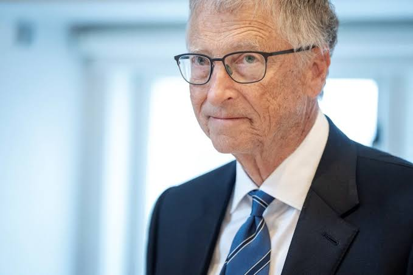
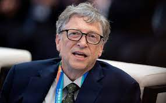
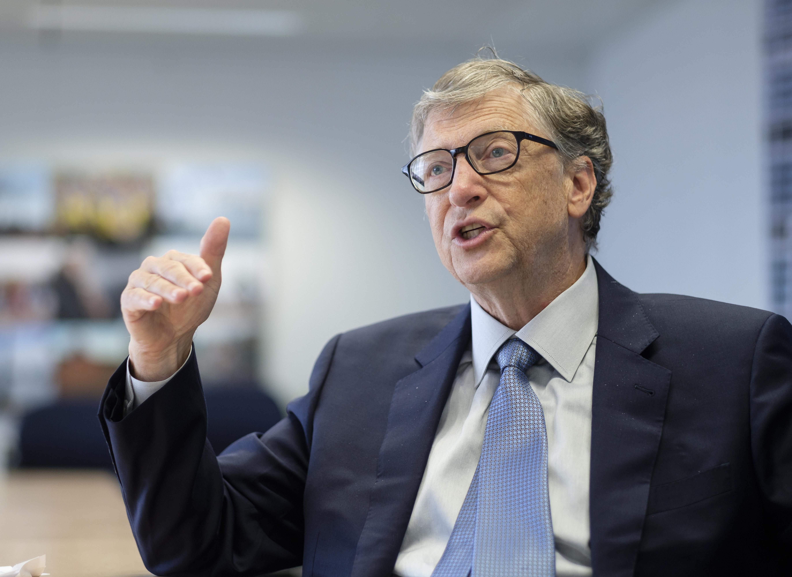
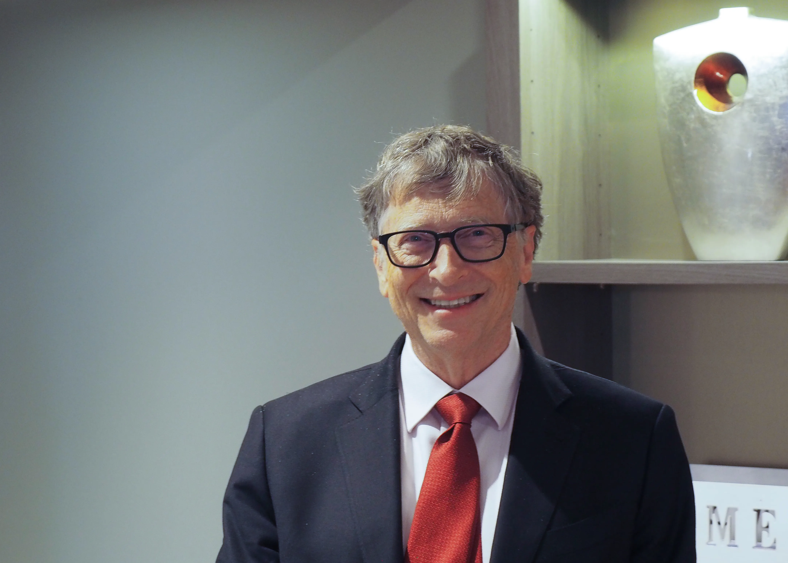
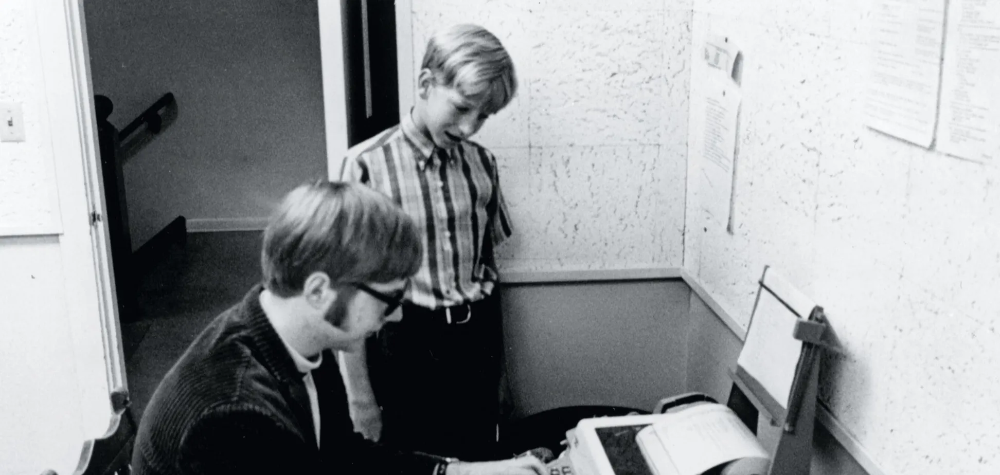
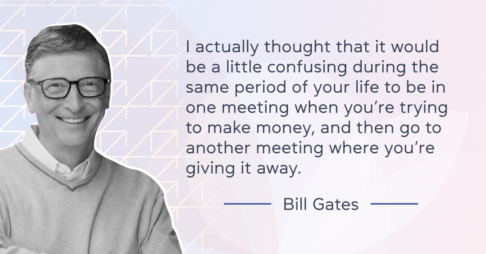

Білл Гейтс




Освіта

- Середня школа: Lakeside School, Сіетл, Вашингтон. З дитинства виявляв інтерес до математики та програмування.
- Університет: Гарвардський університет (1975-1977). Почав вивчати право, але незабаром зосередився на розробці програмного забезпечення. Разом з Полом Алленом заснував Microsoft. Білл Гейтс навчався в Гарварді, але не закінчив його. Через два роки після початку навчання, у 1975 році, він покинув навчання, щоб започаткувати власну компанію Microsoft. Батьки підтримали рішення Білла покинути Гарвард, оскільки бачили, наскільки він хоче відкрити власну компанію. Сам він пояснив це так: "Якби щось не склалося, я завжди міг повернутися до навчання. Офіційно я був у відпустці". До навчання в університеті він так і не повернувся, а от диплом все одно отримав.
- Почесні ступені: Отримав почесні ступені багатьох університетів світу, зокрема Кембриджського та Гарвардського. "Поки його однокурсники гризли граніт науки, він замислював революцію, яка започаткувала еру персональних комп'ютерів", – додав ректор. Коли 51-річний Гейтс отримував диплом, його обличчя сяяло від радості. Обличчя на той момент найбагатшої людини на планеті.
Цікаве про себе

Ми звикли вважати, що генії народжуються у звичайних родинах та досягають успіху потом і кровʼю.
У випадку Білла Гейтса все трішки інакше. Він народився у сімʼї відомого юриста.
А його мати була президенткою національної ради United Way International та членом ради директорів фінансово-телефонної компанії.
Гейтс має трьох дітей і кожен з них отримає 10 мільйонів доларів у спадок, решта грошей піде на благодійність. Таке рішення він пояснив тим, що «Залишати дітям величезну суму грошей не піде їм на користь».